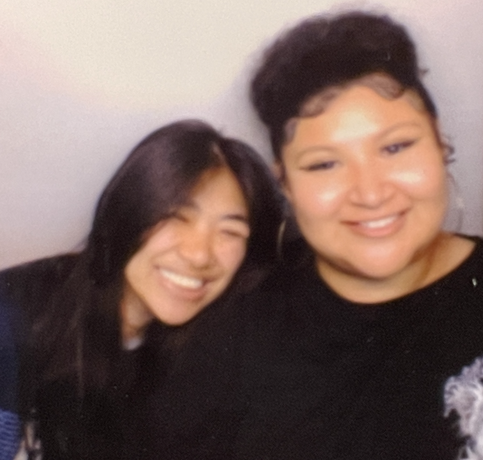

my name is celeste tran
here is a portrait of me

here is a brief introduction of who I am
I’m currently a second year student at San Francisco State University, majoring in Visual Communication Design. I love everything to do with music, fashion, hanging out with my friends and loved ones, and my dog. One of my favorite hobbies is video editing with an Adobe program called After Effects in my free time, and I’ve been editing since 2020. Video editing is one of the only things that calms my nerves when I’m overwhelmed and I love that I can be creative in such a unique way. It’s one of the things that brought my best friend and I together, and I truly couldn’t live my life without her now, and being able to bond over this hobby is something I keep close to my heart. I love and am always listening and talking about music. My favorite artists are One Direction, Billie Eilish and Harry Styles, so mostly pop, but I love discovering other small artists as well. Another thing I love being creative with is photography, and I love collecting and taking photos with my digital cameras. I wanted to keep my future career separate from my video editing hobby, so that when times do get sort of rough and chaotic there’s still something for me to fall back on for comfort and creativity!